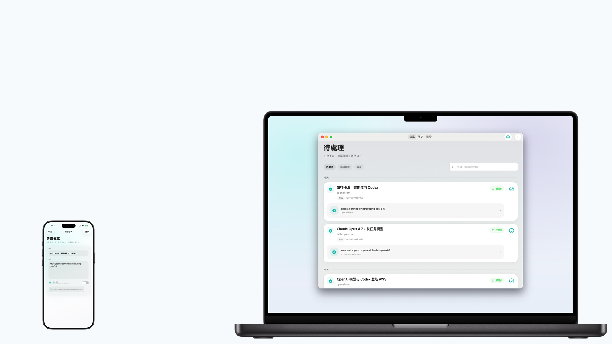
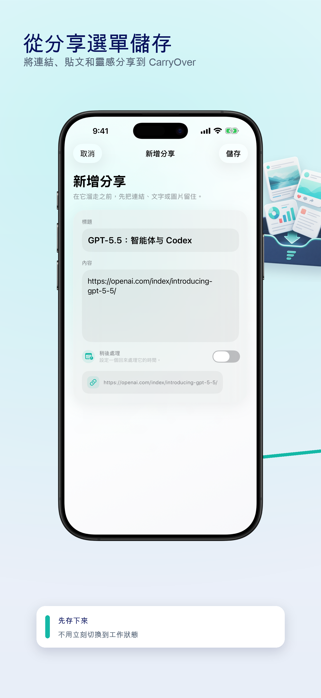
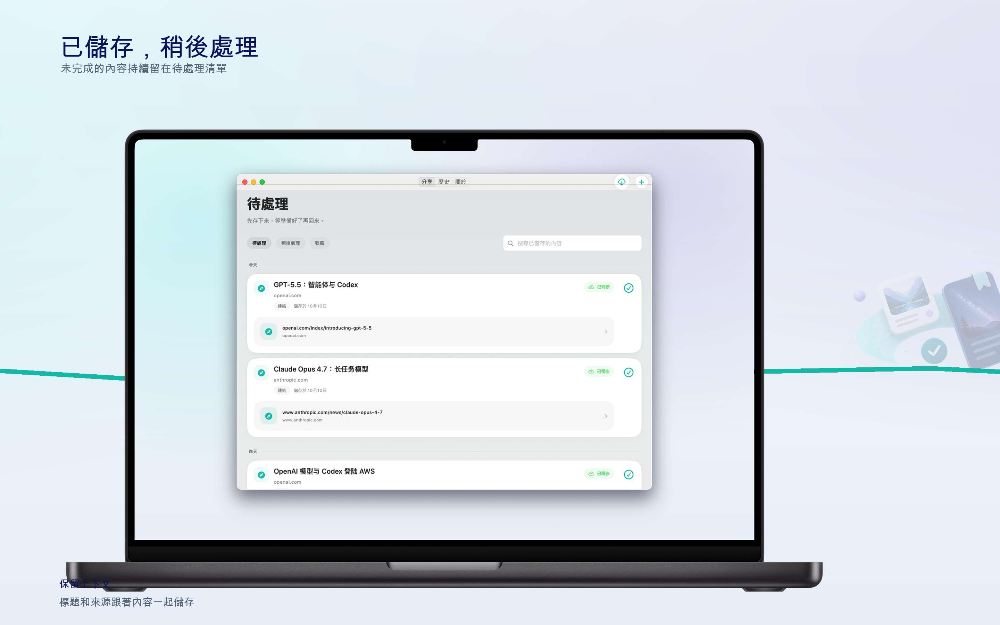

系統分享選單
從 Safari、備忘錄、社群 App 以及其他支援分享的 App 儲存文字和連結。


將連結、貼文和靈感分享到 CarryOver
未完成的內容持續留在待處理清單

打開來源，找到內容，一鍵完成
從 Safari、備忘錄、社群 App 以及其他支援分享的 App 儲存文字和連結。
CarryOver 會識別分享文字中的 URL，並保留原始上下文。
儲存的內容透過 CloudKit 同步，讓 iPhone、iPad 和 Mac 保持一致。
未完成的內容持續留在待處理清單
打開來源，找到內容，一鍵完成
處理完的內容保留在歷史記錄